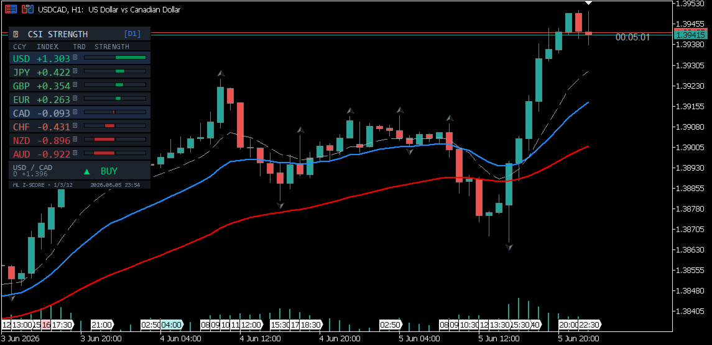

Currency Strength Indicator for MetaTrader 5
How the Currency Strength Index (CSI) works, how to read it inside the web terminal, and how to install the standalone CSI Currency Strength indicator on a MetaTrader 5 chart. If you want a single read on which G10 currency is genuinely strong or weak right now — rather than piecing it together pair by pair — this guide covers the methodology and both places it's available.
What the CSI Is
The Currency Strength Index (CSI) is a composite measure of how strong or weak each G10 currency is relative to all the others at once, rather than against a single counterpart. A currency can be rising against one pair while falling against another; the CSI nets these movements together into one ranking per currency, so a trader can see which side of a pair is actually driving the move.
Methodology
Each currency's score is built from the cumulative log-return of every pair it appears in over the selected horizon: the return is added when the currency is the base of the pair and subtracted when it is the quote, so a currency's score reflects its net direction across the entire G10 cross-rate set rather than one isolated pair.
On the standalone MT5 indicator, this goes a step further. Rather than a single lookback, it computes the return independently across three horizons — short, medium and long — and normalises each into a cross-sectional z-score, so readings are comparable across currencies and over time regardless of each pair's raw volatility. The three z-scores are then combined with configurable weights (25% short / 35% medium / 40% long by default) into one composite score per currency. This multi-lookback weighted approach follows the momentum model of Asness, Moskowitz & Pedersen (2013) and is designed specifically to avoid the "cliff-edge" artifact a single fixed lookback produces, where a score can jump sharply the moment one old data point rolls out of the window.
CSI on the Web Terminal
On the web terminal, CSI appears as a tab inside the Currency Strength Heatmap modal: a multi-series chart showing the cumulative log-return of each of the 10 G10 currencies over 1M / 3M / 6M / 1Y horizons, computed from the full OHLC dataset across all 32 pairs. The focal currency is highlighted and all ten series update on period selection without re-fetching data. A crosshair tooltip shows all 10 values simultaneously, ordered strongest to weakest, and a legend table below shows cumulative return, min, max, and range for each currency over the period.
CSI on MetaTrader 5
For traders who want the same read without switching to a browser, CSI Currency Strength is available separately as a native MetaTrader 5 indicator (MQL5 Market product #180317). It renders currency strength directly as a panel overlay on the chart, using a multi-lookback weighted z-score model (short/medium/long horizons, based on Asness, Moskowitz & Pedersen 2013), covering 28 pairs across eight currencies, each color-coded for quick scanning.

How to Read It
Currencies at the top of the ranking have been broadly bought across the pair set over the selected horizon; currencies at the bottom have been broadly sold. The distance between the strongest and weakest currency — the range — gives a sense of how dispersed the current regime is: a wide range points to a clear directional theme (e.g. a broad dollar move), while a narrow range suggests no single currency is dominating and moves are more pair-specific.
Because the score is cumulative over the selected horizon, switching between 1M / 3M / 6M / 1Y can reorder the ranking — a currency can be the weakest performer over the past month while still net-strong over the past year. Comparing more than one horizon is generally more informative than reading a single one in isolation.
CSI vs. a Single Pair Chart
A single pair chart only shows the relationship between two currencies. If EUR/USD is rising, that could mean EUR is strong, USD is weak, or both — a single chart can't distinguish between those cases. The CSI resolves this by aggregating each currency's performance across every pair it trades in, isolating the currency-specific component of the move from the pair-specific one.
Further Reading
For the full calculation methodology across every terminal panel — z-score normalisation, OIS-implied probability mechanics, and documented limitations — see the published methodology document: